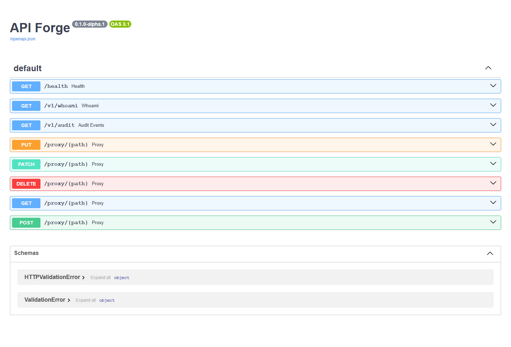

Key lifecycle
Keys are shown once, stored as scrypt hashes with salts, and revocable by ID.
Backend security case study
A FastAPI access gateway for issuing revocable local API keys, applying role and scope policies, enforcing rate limits, and recording metadata-only audit decisions.
01 / Contract
The gateway publishes health, identity, audit, and scoped proxy routes through OpenAPI while keeping the default upstream in deterministic mock mode.

02 / System
Keys are shown once, stored as scrypt hashes with salts, and revocable by ID.
YAML policy intersects each key's scopes with its active role.
An in-process limiter works by default; Redis support is optional.
SQLite is the zero-setup path, with PostgreSQL available as an extra.
03 / Security
Audit events store key ID, method, route, status, decision, and timestamp. Authorization headers, raw keys, and full bodies are never written to the database.
04 / Results
Raw keys are displayed only at creation.
CLI groups for serving, keys, and policy.
Optional production storage extras.
Passing auth, policy, and API tests.
Status
The project includes OpenAPI, policy validation, key lifecycle CLI, architecture notes, security guidance, and CI.